5530A10 alternator - r+r
- Path
- Procedures > 55 ELECTRICAL EQUIPMENT > 5530 CURRENT GENERATOR > 5530A alternator and components > 5530A10 alternator - r+r
- Kind
- repair procedure (removal / refitting; the operation number is the code)
- Applies to
- all engines; all production periods
- Interactive page
- https://sloeber94.github.io/elrnDB-lYpsln/en/#/2429395
Applies to: engines: 1.2 8v, 1.2 16v, 1.4 16v; all production periods
 Removing
Removing
 Refitting
RefittingPlace the vehicle on a lift.
7055B91 Right front WHEEL ARCH LINER - R.R.
7055B66 Engine compartment DUST SHIELD protection in right front wheel arch - R.R.
1. Undo the fixing nuts (1a) and disconnect the exhaust pipe (1b).
2. Undo the bolt with nut (2a) for the power unit reaction rod (2b).
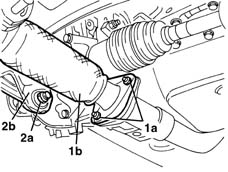
Applies to: engines: 1.3 JTD; all production periods
Removing
RefittingPosition the vehicle on the ramp.
Ensure that the ignition key is in the OFF position, then loosen the bolt and disconnect the battery negative (-) terminal.
 | Name | Connector |
|---|---|---|
- | Battery |
Proceed with removal 4450B04 right front wheel r r .
Proceed with removal 7055B66 Engine compartment DUST SHIELD protection in right front wheel arch - R.R. .
Proceed with removal 7055B91 Right front WHEEL ARCH LINER - R.R. .
Proceed with removal 1092G10 single engine belt r r .
1. Undo the nuts (1a) and disconnect the electrical connections (1b) from the alternator.
| Name | Connector |
|---|---|---|
1b | Alternator |
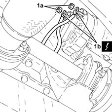
Applies to: engines: 1.2 8v, 1.2 16v, 1.4 16v; all production periods
1. Slacken the steering tie-rod nut.
2. Disconnect steering link (2a) from front hub steering knuckle (2b) using tool (2c).
 | Name | Country |
|---|---|---|
2c | Extractor | 1.871.000.700 |
3. Release ABS wiring (3a) from retaining bands (3b).
4. Undo and remove the bolts with nut fixing the strut to the shock absorber.
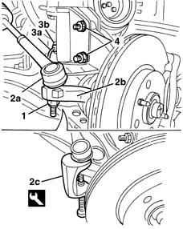
Applies to: engines: 1.3 JTD; all production periods
1. Undo the bolts (1a) and remove the alternato (1b).
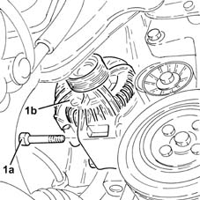
Applies to: engines: 1.2 8v, 1.2 16v, 1.4 16v; all production periods
1. Remove the right hald-axle gaiter boot retaining band.
2. Move the power unit (2a) slightly forward and pull half-axle (2b) to the right, disconnecting it from gearbox joint (2c).
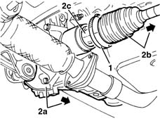
Applies to: engines: 1.3 JTD; all production periods
Refitting
Removing1. Place the alternator(1a) back in its housing and secure it tightening the bolts (1b) to the recommended torque.
 | Fastening | Component | Ø | Value (daNm) |
|---|---|---|---|---|
1b | Bolt | ALTERNATOR ASSEMBLY | M8 | (Support side) 2.3 ÷ 2.8 |
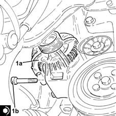
Applies to: engines: 1.2 8v, 1.2 16v, 1.4 16v; all production periods
1. Fit a spanner (1a) in the services belt tensioner socket (1b) and rotate it in the direction of the arrow, then release and remove the services belt (1c).
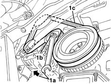
Applies to: engines: 1.3 JTD; all production periods
Connect the electrical connections to the alternator and fix them using the nuts.
Proceed with refitting 1092G10 single engine belt r r .
Proceed with refitting 7055B91 Right front WHEEL ARCH LINER - R.R. .
Proceed with refitting 7055B66 Engine compartment DUST SHIELD protection in right front wheel arch - R.R. .
Proceed with refitting 4450B04 right front wheel r r .
Connect the negative (-) battery terminal.
Remove the vehicle from the ramp.
Applies to: engines: 1.2 8v, 1.2 16v, 1.4 16v; all production periods
1. Release and remove alternator electrical connections (1a).
2. Undo nuts (2a) and disconnect electrical connections (2b) and (2c) from the alternator.
| Name | Connector |
|---|---|---|
2b | Starter' motor |
| Name | Connector |
|---|---|---|
2c | Starter' motor |
3. Undo upper bolt (3a) and lower bolts (3b), then remove alternator (3c).
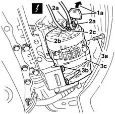
Applies to: engines: 1.2 8v, 1.2 16v, 1.4 16v; all production periods
Refitting
RemovingCheck that the alternator is not damaged.
1. Place the alternator back in its housing and fix it tightening the bolts to the recommended torque.
| Fastening | Component | Ø | Value (daNm) |
|---|---|---|---|---|
1 | Bolt | ALTERNATOR ASSEMBLY | M10 | 4.5 ÷ 5.5 |
2. Connect the electrical connections to the alternator and fix them using the nuts.
3. Reclose the electrical connection cover.
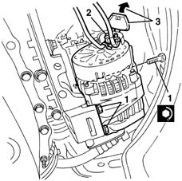
Applies to: engines: 1.2 8v, 1.2 16v, 1.4 16v; all production periods
Refit the service belt, moving the tensioner by inserting the wrench in the fitting.
Reconnect the half-axle to the joint on the gearbox.
Position the half-axle gaiter and secure with the band.
1. Refit the bolts with nut securing the strut to the shock absorber and tighten to the specified torque.
| Fastening | Component | Ø | Value (daNm) |
|---|---|---|---|---|
1 | Bolt | FRONT HUB STEERING KNUCKLE. | M10 | 6.2 ÷ 6.8 |
2. Do up ABS sensor wiring (2b) to retainer (2a).
3. Connect steering link (3a) to front wheel hub strut (3b), then tighten nut (3c) and tighten to the specified torque.
| Fastening | Component | Ø | Value (daNm) |
|---|---|---|---|---|
3c | Nut | STEERING LINK | M10 | 3.6 ÷ 4.4 |
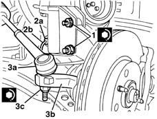
Applies to: engines: 1.2 8v, 1.2 16v, 1.4 16v; all production periods
1. Refit the power unit reaction link bolt with nut and tighten.
2. Reconnect exhaust pipe (2a) and tighten nuts (2b) to the specified torque.
| Fastening | Component | Ø | Value (daNm) |
|---|---|---|---|---|
2b | Nut | EXHAUST PIPE FLANGE | M8 | 2.3 ÷ 2.8 |
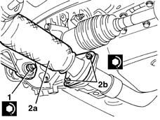
Applies to: engines: 1.2 8v, 1.2 16v, 1.4 16v; all production periods
7055B66 Engine compartment DUST SHIELD protection in right front wheel arch - R.R.
7055B91 Right front WHEEL ARCH LINER - R.R.
Remove the vehicle from the lift.
Topics linked from this page (8)
- 1092G10 single engine belt r r
- 4450B04 right front wheel r r
- 7055B66 Engine compartment DUST SHIELD protection in right front wheel arch - R.R.
- 7055B91 Right front WHEEL ARCH LINER - R.R.
- A1B Battery ( BATTERY NEGATIVE )
- A10 Alternator
- A20A Starter' motor ( BATTERY POSITIVE )
- A20B Starter' motor ( ENGINE )